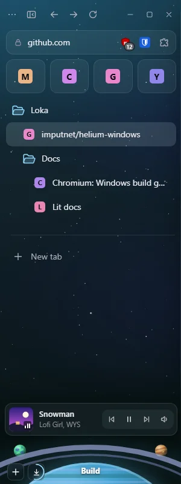
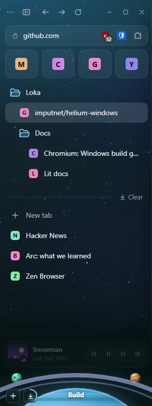

Loka’s current sidebar has three gaps left
My first audit ran on main (a6c4941), which predates the planets and the horizon. On feat/ux3 (b8cb26e) most of it is already fixed. What’s left: no undo, one tab at a time, and too many Tab stops.
| Gap, as a user meets it | Proposed fix |
|---|---|
| “Clear” and × delete open tabs with no way back | Undo toast above the music card, plus Ctrl Shift T |
| Sorting 10 tabs into a folder takes 10 drags | Ctrl/Shift-click to select; drag and right-click act on all |
| 30 Tab presses still haven’t left the open tabs | One Tab stop per list (Essentials, pinned, open, horizon); arrows inside |
What I need from you
- Build all three, undo first?
- Selected rows: the accent outline in the mockup, or a softer tint only?
Mockups on the real sidebar
Undo after Clear

Closed 3 tabsUndoCtrl Shift T
Two tabs selected, dragged into Docs

2 tabs
One Tab stop: arrows move inside
Already fixed on feat/ux3: 6 of the first audit’s findings
| First audit said | Now |
|---|---|
| Menus ignore Esc, take no focus | Focus goes to the first item; Esc closes (checked) |
| Arrows do nothing in the tree | ArrowDown moves from Docs to the next row (checked) |
| Ctrl K can’t find open tabs | “lit” offers Switch to tab, search and history (checked) |
| Spaces can’t be renamed or added well | The planet’s menu has Edit this space and New space |
| Space switcher shows initials | Planets on the horizon, current one named |
| Short window cuts off the switcher | At 1280×480 the horizon stays; the list scrolls |
How I checked
Reset this worktree to origin/feat/ux3, ran the prototype, and drove it with the verify-loka driver: right-click menu, Esc, the planet’s menu, More, Ctrl K with “lit”, 30 Tab presses, ArrowDown, Clear, Ctrl 2 and Ctrl 3, and 1280×480. Evidence: .agents/verify-runs/20261016-034129-ui-audit-ux3/. Not checked: the built browser (chrome://loka-sidebar.top-chrome), screen readers, hundreds of tabs.